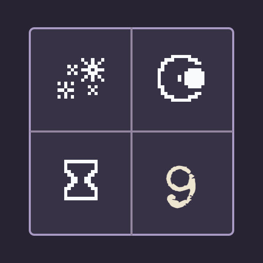

<- all projects

Shadow Sum
Android, PC
Volume
Live
Reveal hidden values.
The labels have faded, but the totals remain. Step into a quiet archive and reconstruct the values of mysterious symbols by comparing rows, columns, regions and diagonals. Each symbol hides one whole number, and the same symbol always means the same value on a page, so a single discovery can unlock several clues at once. Every row and column must add up to its printed total, and a mark shows when one disagrees. Worked examples teach substitution and how subtracting two clues can cancel symbols. The campaign holds 200 verified grids across five chapters, with three daily pages and 90 extra archive pages.